# if not alraedy done load library ggplot2
library(ggplot2)Warning: le package 'ggplot2' a été compilé avec la version R 4.1.2data(iris)
ggplot(data = iris, aes(Sepal.Length, Sepal.Width))+ # scatter plot
geom_point()
ggplot2 is a powerfull packages to make a very smart graph “ready to use” for publication. gg means grammar and graph, a concept which describe a graph using grammar. This package belong to tidyverse according to “dplyr”. According to the ggplot2 concept, a graph can be divided into different basic parts:Plot = data + Aesthetics + Geometry
# if not alraedy done load library ggplot2
library(ggplot2)Warning: le package 'ggplot2' a été compilé avec la version R 4.1.2data(iris)
ggplot(data = iris, aes(Sepal.Length, Sepal.Width))+ # scatter plot
geom_point()
ggplot(data = iris, aes(Sepal.Length, Sepal.Width))+ # scatter plot
geom_line()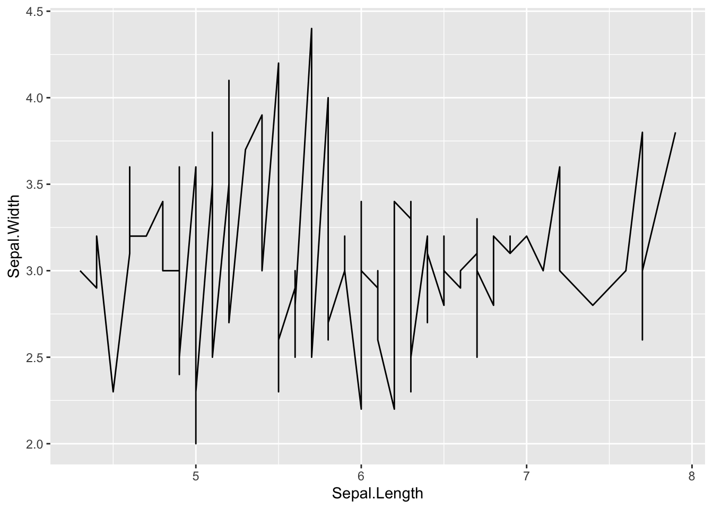
# Change size, color and shape in a scatter plot
ggplot(data = iris, aes(Sepal.Length, Sepal.Width))+ # scatter plot
geom_point(size=3, color ="steelblue", shape=21) # shape is the same thing wiht classical plot on R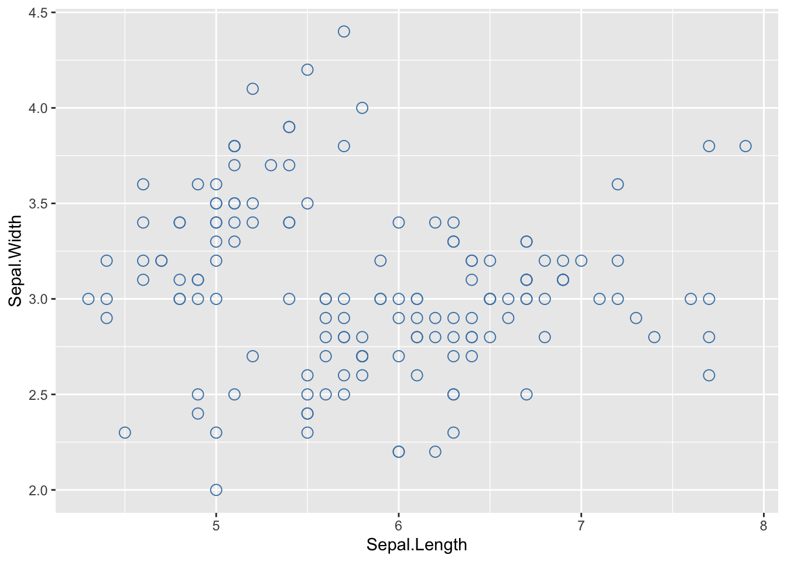
# We can calorize and give a shape by month
ggplot(data = iris, aes(Sepal.Length, Sepal.Width))+ # scatter plot
geom_point(aes(color = Species, shape = Species)) # shape is the same thing with classical plot on R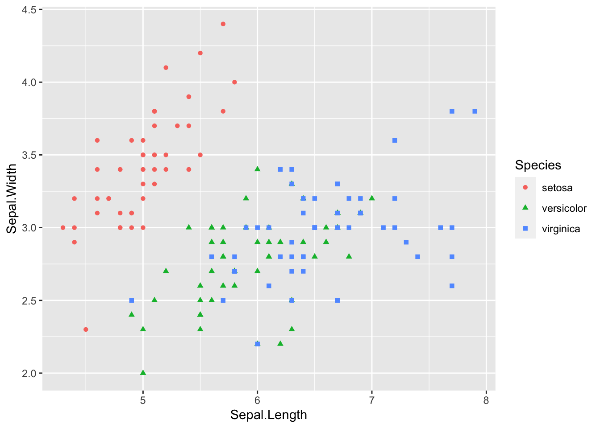
Be carefull alpha option is for transparency and ranged between 0 and 1
ggplot(data = iris, aes(Sepal.Width,Sepal.Length))+
geom_point(aes(color = Petal.Width, shape = Species), size = 2,alpha=(0.8))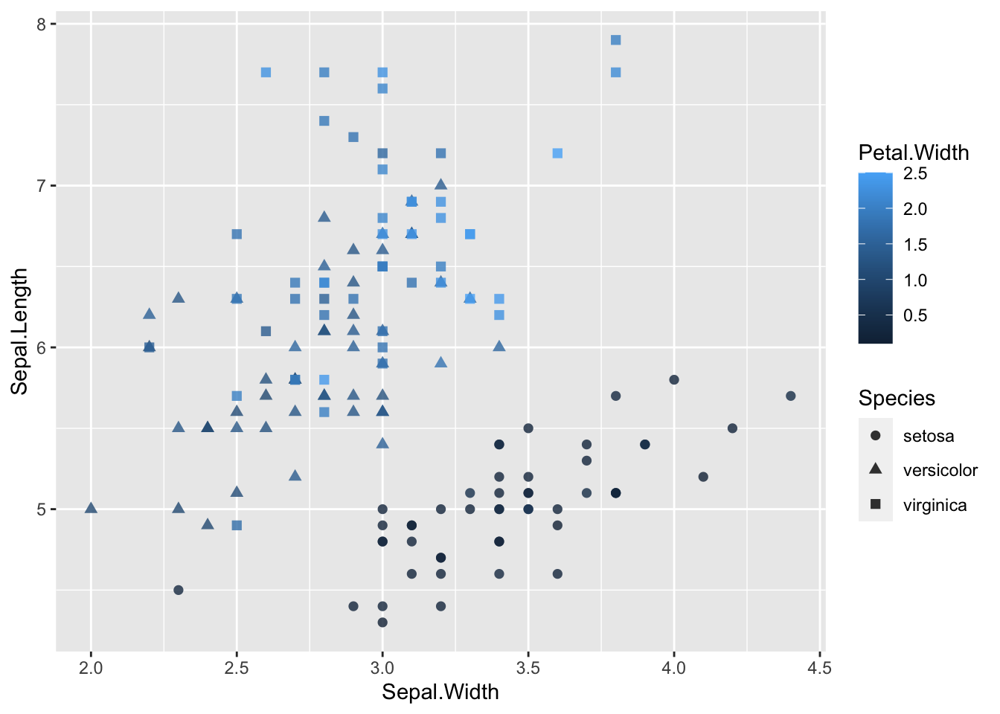
What kind of conclusion we can give me with this kind of graph?
ggplot(data = iris, aes(Sepal.Width,Sepal.Length))+
geom_point(aes(color = Petal.Width, shape = Species), size = 2,alpha=(0.8))+
scale_color_gradient(low = "yellow", high = "red")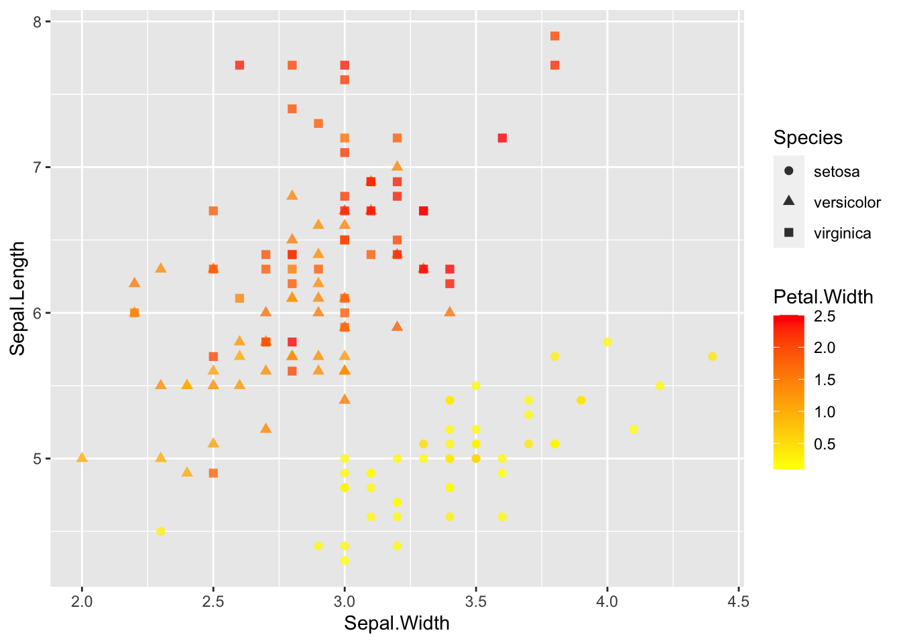
# You can change manually color with la fonction scale_color_manual()
ggplot(data = iris, aes(Sepal.Length, Sepal.Width))+ # scatter plot
geom_point(aes(color = Species, shape = Species)) +
scale_color_manual(values = c("#00AFBB", "#E7B800", "#FC4E07"))
#You can store your plot in a variable to print later
p<-ggplot(data = iris, aes(Sepal.Length, Sepal.Width))+ # scatter plot
geom_point(aes(color = Species, shape = Species)) +
scale_color_manual(values = c("#00AFBB", "#E7B800", "#FC4E07"))+
theme_minimal()
print(p)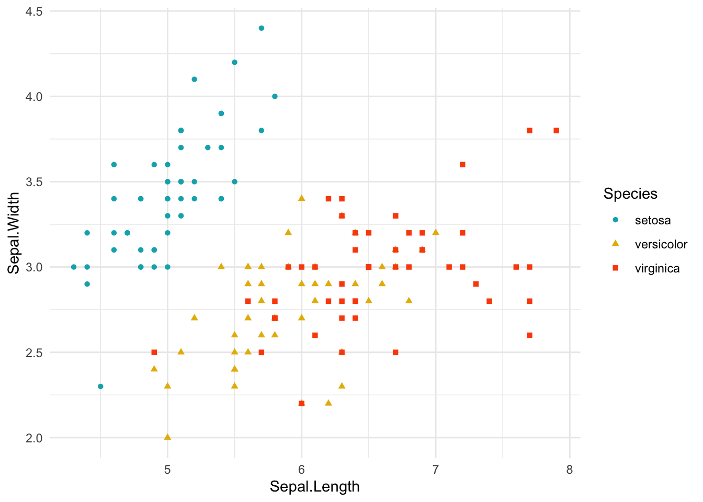
What do you see if you play the following command : names(p)?
#To arrange the graph we can add some label and change the position of the legend
p + theme(legend.position = "top")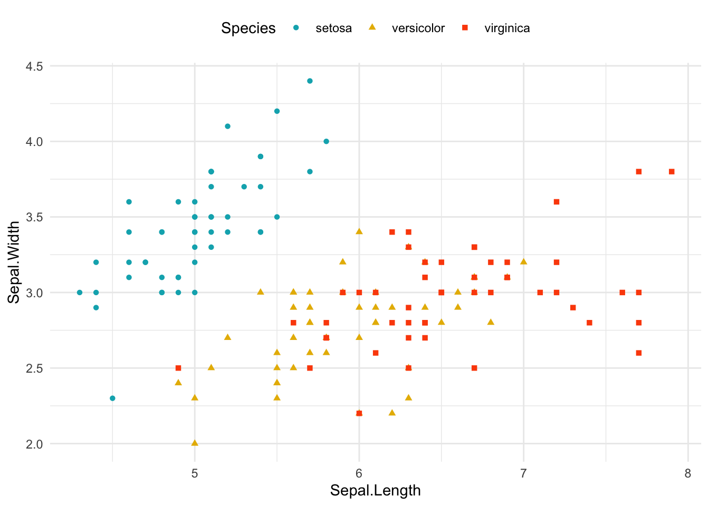
p + labs(color = "Species", shape= "Sepcies",
title = "Sepal Length for each speices",
subtitle = "is a data frame with 150 cases (rows) and 5 variables",
x = "Sepal.Length (mm)", y = "Sepal.Width (mm)"
)
p2<-ggplot(data = iris, aes(Sepal.Length,Petal.Length))+ # scatter plot
geom_point(size=3, color ="steelblue") +
stat_smooth(method=lm, se=TRUE, na.rm=TRUE, show.legend = TRUE)
p2 + labs(x = "Sepal.Length (mm)", y = "Pepal.Length (mm)")`geom_smooth()` using formula = 'y ~ x'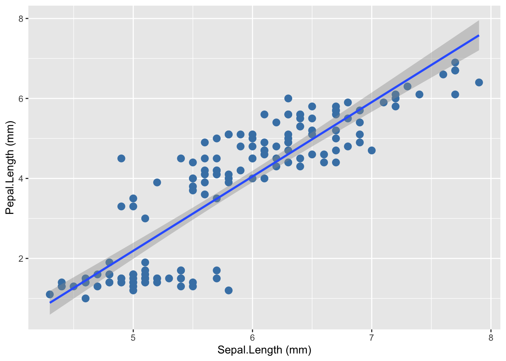
To get data from the trend
ggplot_build(p2)$data[[2]]`geom_smooth()` using formula = 'y ~ x' x y ymin ymax se flipped_aes PANEL group
1 4.300000 0.8898184 0.5928870 1.186750 0.15025965 FALSE 1 -1
2 4.345570 0.9745065 0.6843700 1.264643 0.14682115 FALSE 1 -1
3 4.391139 1.0591946 0.7758049 1.342584 0.14340694 FALSE 1 -1
4 4.436709 1.1438827 0.8671884 1.420577 0.14001881 FALSE 1 -1
5 4.482278 1.2285708 0.9585165 1.498625 0.13665869 FALSE 1 -1
6 4.527848 1.3132589 1.0497850 1.576733 0.13332869 FALSE 1 -1
7 4.573418 1.3979469 1.1409895 1.654904 0.13003114 FALSE 1 -1
8 4.618987 1.4826350 1.2321248 1.733145 0.12676857 FALSE 1 -1
9 4.664557 1.5673231 1.3231856 1.811461 0.12354374 FALSE 1 -1
10 4.710127 1.6520112 1.4141657 1.889857 0.12035969 FALSE 1 -1
11 4.755696 1.7366993 1.5050587 1.968340 0.11721974 FALSE 1 -1
12 4.801266 1.8213874 1.5958574 2.046917 0.11412754 FALSE 1 -1
13 4.846835 1.9060755 1.6865538 2.125597 0.11108706 FALSE 1 -1
14 4.892405 1.9907635 1.7771394 2.204388 0.10810268 FALSE 1 -1
15 4.937975 2.0754516 1.8676047 2.283299 0.10517918 FALSE 1 -1
16 4.983544 2.1601397 1.9579394 2.362340 0.10232176 FALSE 1 -1
17 5.029114 2.2448278 2.0481322 2.441523 0.09953612 FALSE 1 -1
18 5.074684 2.3295159 2.1381710 2.520861 0.09682845 FALSE 1 -1
19 5.120253 2.4142040 2.2280424 2.600366 0.09420548 FALSE 1 -1
20 5.165823 2.4988921 2.3177320 2.680052 0.09167449 FALSE 1 -1
21 5.211392 2.5835801 2.4072245 2.759936 0.08924328 FALSE 1 -1
22 5.256962 2.6682682 2.4965032 2.840033 0.08692025 FALSE 1 -1
23 5.302532 2.7529563 2.5855505 2.920362 0.08471428 FALSE 1 -1
24 5.348101 2.8376444 2.6743480 3.000941 0.08263476 FALSE 1 -1
25 5.393671 2.9223325 2.7628763 3.081789 0.08069145 FALSE 1 -1
26 5.439241 3.0070206 2.8511155 3.162926 0.07889444 FALSE 1 -1
27 5.484810 3.0917086 2.9390454 3.244372 0.07725392 FALSE 1 -1
28 5.530380 3.1763967 3.0266461 3.326147 0.07578006 FALSE 1 -1
29 5.575949 3.2610848 3.1138978 3.408272 0.07448275 FALSE 1 -1
30 5.621519 3.3457729 3.2007821 3.490764 0.07337136 FALSE 1 -1
31 5.667089 3.4304610 3.2872821 3.573640 0.07245446 FALSE 1 -1
32 5.712658 3.5151491 3.3733831 3.656915 0.07173948 FALSE 1 -1
33 5.758228 3.5998372 3.4590730 3.740601 0.07123252 FALSE 1 -1
34 5.803797 3.6845252 3.5443430 3.824707 0.07093803 FALSE 1 -1
35 5.849367 3.7692133 3.6291879 3.909239 0.07085867 FALSE 1 -1
36 5.894937 3.8539014 3.7136063 3.994197 0.07099515 FALSE 1 -1
37 5.940506 3.9385895 3.7976006 4.079578 0.07134624 FALSE 1 -1
38 5.986076 4.0232776 3.8811770 4.165378 0.07190879 FALSE 1 -1
39 6.031646 4.1079657 3.9643453 4.251586 0.07267789 FALSE 1 -1
40 6.077215 4.1926538 4.0471181 4.338189 0.07364708 FALSE 1 -1
41 6.122785 4.2773418 4.1295109 4.425173 0.07480857 FALSE 1 -1
42 6.168354 4.3620299 4.2115411 4.512519 0.07615357 FALSE 1 -1
43 6.213924 4.4467180 4.2932276 4.600208 0.07767254 FALSE 1 -1
44 6.259494 4.5314061 4.3745899 4.688222 0.07935550 FALSE 1 -1
45 6.305063 4.6160942 4.4556484 4.776540 0.08119225 FALSE 1 -1
46 6.350633 4.7007823 4.5364230 4.865141 0.08317259 FALSE 1 -1
47 6.396203 4.7854704 4.6169337 4.954007 0.08528654 FALSE 1 -1
48 6.441772 4.8701584 4.6971995 5.043117 0.08752440 FALSE 1 -1
49 6.487342 4.9548465 4.7772387 5.132454 0.08987692 FALSE 1 -1
50 6.532911 5.0395346 4.8570686 5.222001 0.09233535 FALSE 1 -1
51 6.578481 5.1242227 4.9367056 5.311740 0.09489144 FALSE 1 -1
52 6.624051 5.2089108 5.0161647 5.401657 0.09753752 FALSE 1 -1
53 6.669620 5.2935989 5.0954600 5.491738 0.10026647 FALSE 1 -1
54 6.715190 5.3782869 5.1746046 5.581969 0.10307170 FALSE 1 -1
55 6.760759 5.4629750 5.2536105 5.672340 0.10594715 FALSE 1 -1
56 6.806329 5.5476631 5.3324885 5.762838 0.10888727 FALSE 1 -1
57 6.851899 5.6323512 5.4112489 5.853454 0.11188695 FALSE 1 -1
58 6.897468 5.7170393 5.4899007 5.944178 0.11494153 FALSE 1 -1
59 6.943038 5.8017274 5.5684525 6.035002 0.11804675 FALSE 1 -1
60 6.988608 5.8864155 5.6469119 6.125919 0.12119872 FALSE 1 -1
61 7.034177 5.9711035 5.7252860 6.216921 0.12439388 FALSE 1 -1
62 7.079747 6.0557916 5.8035811 6.308002 0.12762899 FALSE 1 -1
63 7.125316 6.1404797 5.8818031 6.399156 0.13090109 FALSE 1 -1
64 7.170886 6.2251678 5.9599574 6.490378 0.13420747 FALSE 1 -1
65 7.216456 6.3098559 6.0380488 6.581663 0.13754566 FALSE 1 -1
66 7.262025 6.3945440 6.1160818 6.673006 0.14091339 FALSE 1 -1
67 7.307595 6.4792321 6.1940606 6.764404 0.14430861 FALSE 1 -1
68 7.353165 6.5639201 6.2719887 6.855852 0.14772942 FALSE 1 -1
69 7.398734 6.6486082 6.3498697 6.947347 0.15117407 FALSE 1 -1
70 7.444304 6.7332963 6.4277068 7.038886 0.15464098 FALSE 1 -1
71 7.489873 6.8179844 6.5055028 7.130466 0.15812868 FALSE 1 -1
72 7.535443 6.9026725 6.5832603 7.222085 0.16163582 FALSE 1 -1
73 7.581013 6.9873606 6.6609818 7.313739 0.16516118 FALSE 1 -1
74 7.626582 7.0720486 6.7386697 7.405428 0.16870359 FALSE 1 -1
75 7.672152 7.1567367 6.8163259 7.497148 0.17226202 FALSE 1 -1
76 7.717722 7.2414248 6.8939523 7.588897 0.17583549 FALSE 1 -1
77 7.763291 7.3261129 6.9715509 7.680675 0.17942310 FALSE 1 -1
78 7.808861 7.4108010 7.0491231 7.772479 0.18302403 FALSE 1 -1
79 7.854430 7.4954891 7.1266705 7.864308 0.18663749 FALSE 1 -1
80 7.900000 7.5801772 7.2041946 7.956160 0.19026278 FALSE 1 -1
colour fill linewidth linetype weight alpha
1 #3366FF grey60 1 1 1 0.4
2 #3366FF grey60 1 1 1 0.4
3 #3366FF grey60 1 1 1 0.4
4 #3366FF grey60 1 1 1 0.4
5 #3366FF grey60 1 1 1 0.4
6 #3366FF grey60 1 1 1 0.4
7 #3366FF grey60 1 1 1 0.4
8 #3366FF grey60 1 1 1 0.4
9 #3366FF grey60 1 1 1 0.4
10 #3366FF grey60 1 1 1 0.4
11 #3366FF grey60 1 1 1 0.4
12 #3366FF grey60 1 1 1 0.4
13 #3366FF grey60 1 1 1 0.4
14 #3366FF grey60 1 1 1 0.4
15 #3366FF grey60 1 1 1 0.4
16 #3366FF grey60 1 1 1 0.4
17 #3366FF grey60 1 1 1 0.4
18 #3366FF grey60 1 1 1 0.4
19 #3366FF grey60 1 1 1 0.4
20 #3366FF grey60 1 1 1 0.4
21 #3366FF grey60 1 1 1 0.4
22 #3366FF grey60 1 1 1 0.4
23 #3366FF grey60 1 1 1 0.4
24 #3366FF grey60 1 1 1 0.4
25 #3366FF grey60 1 1 1 0.4
26 #3366FF grey60 1 1 1 0.4
27 #3366FF grey60 1 1 1 0.4
28 #3366FF grey60 1 1 1 0.4
29 #3366FF grey60 1 1 1 0.4
30 #3366FF grey60 1 1 1 0.4
31 #3366FF grey60 1 1 1 0.4
32 #3366FF grey60 1 1 1 0.4
33 #3366FF grey60 1 1 1 0.4
34 #3366FF grey60 1 1 1 0.4
35 #3366FF grey60 1 1 1 0.4
36 #3366FF grey60 1 1 1 0.4
37 #3366FF grey60 1 1 1 0.4
38 #3366FF grey60 1 1 1 0.4
39 #3366FF grey60 1 1 1 0.4
40 #3366FF grey60 1 1 1 0.4
41 #3366FF grey60 1 1 1 0.4
42 #3366FF grey60 1 1 1 0.4
43 #3366FF grey60 1 1 1 0.4
44 #3366FF grey60 1 1 1 0.4
45 #3366FF grey60 1 1 1 0.4
46 #3366FF grey60 1 1 1 0.4
47 #3366FF grey60 1 1 1 0.4
48 #3366FF grey60 1 1 1 0.4
49 #3366FF grey60 1 1 1 0.4
50 #3366FF grey60 1 1 1 0.4
51 #3366FF grey60 1 1 1 0.4
52 #3366FF grey60 1 1 1 0.4
53 #3366FF grey60 1 1 1 0.4
54 #3366FF grey60 1 1 1 0.4
55 #3366FF grey60 1 1 1 0.4
56 #3366FF grey60 1 1 1 0.4
57 #3366FF grey60 1 1 1 0.4
58 #3366FF grey60 1 1 1 0.4
59 #3366FF grey60 1 1 1 0.4
60 #3366FF grey60 1 1 1 0.4
61 #3366FF grey60 1 1 1 0.4
62 #3366FF grey60 1 1 1 0.4
63 #3366FF grey60 1 1 1 0.4
64 #3366FF grey60 1 1 1 0.4
65 #3366FF grey60 1 1 1 0.4
66 #3366FF grey60 1 1 1 0.4
67 #3366FF grey60 1 1 1 0.4
68 #3366FF grey60 1 1 1 0.4
69 #3366FF grey60 1 1 1 0.4
70 #3366FF grey60 1 1 1 0.4
71 #3366FF grey60 1 1 1 0.4
72 #3366FF grey60 1 1 1 0.4
73 #3366FF grey60 1 1 1 0.4
74 #3366FF grey60 1 1 1 0.4
75 #3366FF grey60 1 1 1 0.4
76 #3366FF grey60 1 1 1 0.4
77 #3366FF grey60 1 1 1 0.4
78 #3366FF grey60 1 1 1 0.4
79 #3366FF grey60 1 1 1 0.4
80 #3366FF grey60 1 1 1 0.4 ggplot(data = iris)+
geom_density(aes(x = Sepal.Length, fill = "Sepal.Length"))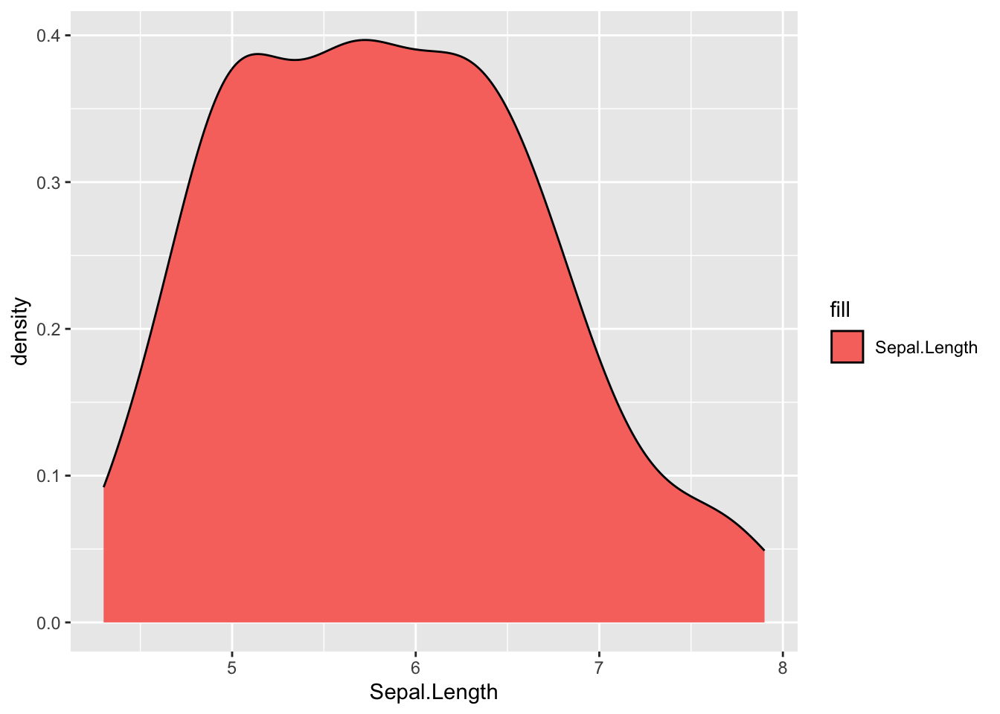
ggplot(data = iris)+
geom_density(aes(x = Sepal.Length, fill = "Sepal.Length"))+
geom_density(aes(x = Sepal.Width, fill = "Sepal.Width"))
ggplot(data = iris)+
geom_density(aes(x = Sepal.Length, fill = "Sepal.Length"))+
geom_density(aes(x = Sepal.Width, fill = "Sepal.Width"))+
geom_density(aes(x = Petal.Width, fill = "Petal.Width"))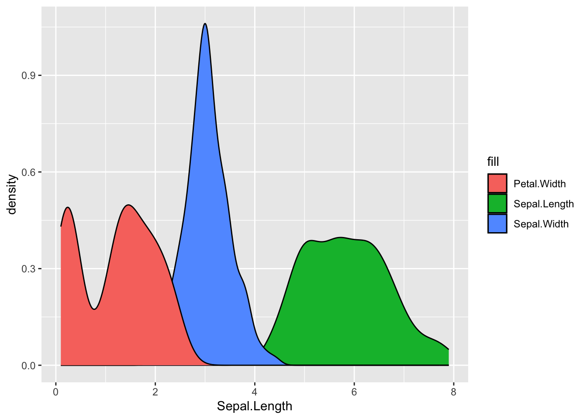
ggplot(data = iris)+
geom_density(aes(x = Sepal.Length, fill = "Sepal.Length"), alpha=0.4,color=NA)+
geom_density(aes(x = Sepal.Width, fill = "Sepal.Width"), alpha=0.4,color=NA)+
geom_density(aes(x = Petal.Width, fill = "Petal.Width"), alpha=0.4,color=NA)+
geom_density(aes(x = Petal.Length, fill = "Petal.Length"), alpha=0.4,color=NA)+
labs(x="cm", y="Fréquence")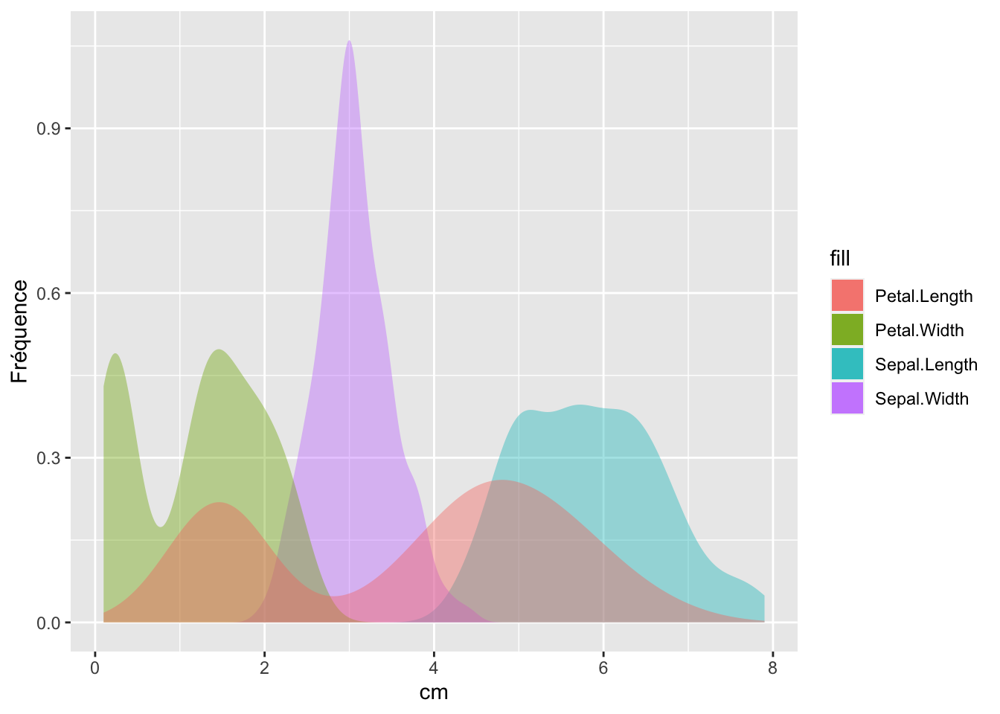
library(dplyr)Warning: le package 'dplyr' a été compilé avec la version R 4.1.2
Attachement du package : 'dplyr'Les objets suivants sont masqués depuis 'package:stats':
filter, lagLes objets suivants sont masqués depuis 'package:base':
intersect, setdiff, setequal, unionmy_df<-iris %>%
dplyr::group_by(Species)%>%
dplyr::summarise(moyenne=mean(Sepal.Length, na.rm=TRUE), sd=sd(Sepal.Length, na.rm=TRUE))
my_df<-as.data.frame(my_df)
ggplot(data = my_df, aes(Species, moyenne))+# scatter plot
geom_col(aes(color= Species, fill=Species))+
labs(x="Species", y="Sepal.Length (mm)")+
geom_errorbar(aes(ymin = moyenne-sd, ymax = moyenne+sd), width=0.2)
ggplot(data = iris, aes(Species, Sepal.Length))+
geom_boxplot()+
labs(x="Species", y="Sepal.Length (mm)")+
theme_minimal()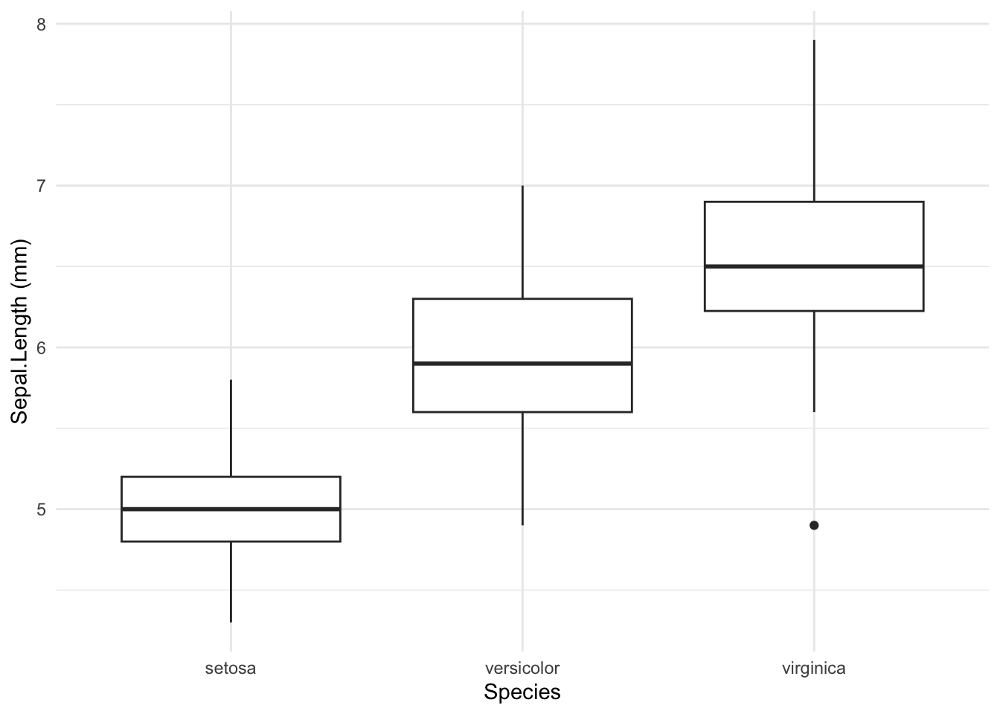
ggplot(data = iris, aes(Species, Sepal.Length))+
geom_boxplot(aes(color=Species, fill=Species), alpha=0.4)+
labs(x="Species", y="Sepal.Length (mm)")+
theme_minimal()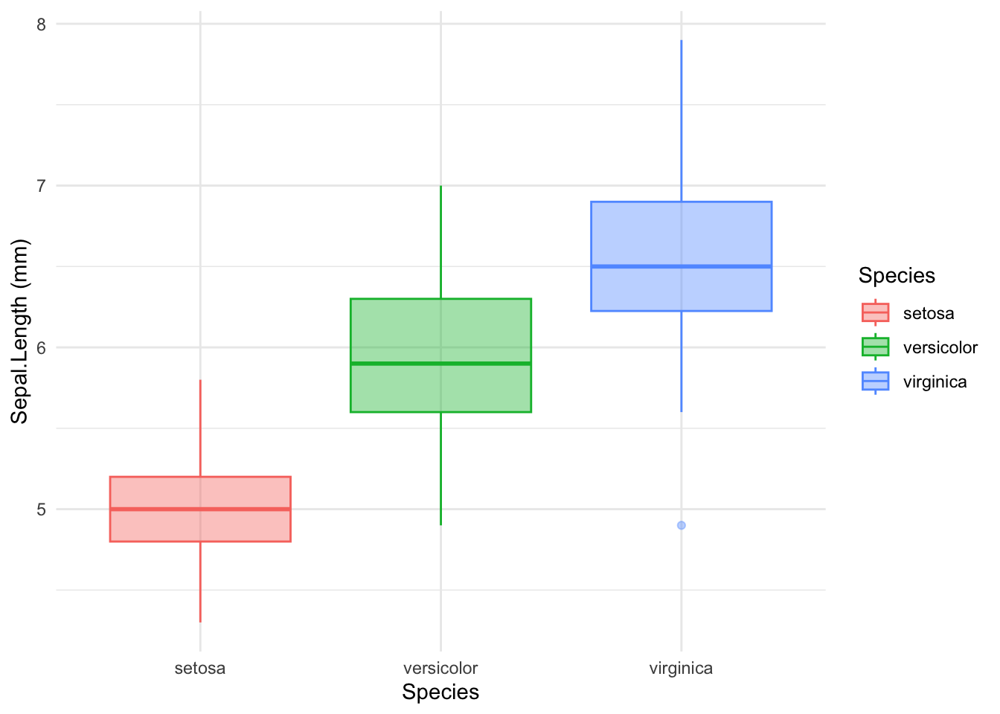
ggplot(data = iris, aes(Species, Sepal.Length))+
geom_boxplot(aes(color=Species, fill=Species), alpha=0.4)+
geom_jitter(aes(colour = Species), position = position_jitter(0.07), cex = 2.2)+
labs(x="Species", y="Sepal.Length (mm)")+
theme_minimal()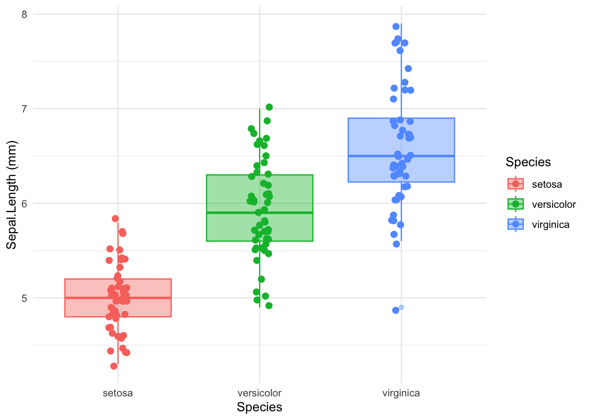
ggplot(data=iris, aes(x=Species, y=Sepal.Length))+
geom_boxplot(aes(fill=Species,col=Species),alpha=0.6)+
labs(x="Species",y="Sepal Length", title="Iris Boxplot")+
stat_summary(fun=mean, geom="point", shape=5, col="white", size=3) 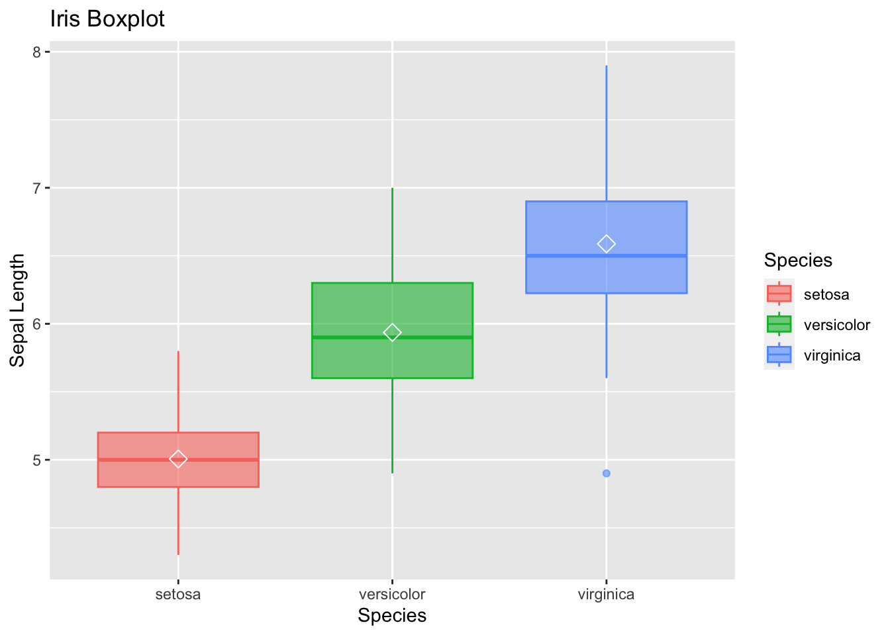
Notez Densité à travers des contours lignes
ggplot(data=iris,aes(x=Sepal.Width,y=Sepal.Length, color=Species))+
geom_density2d()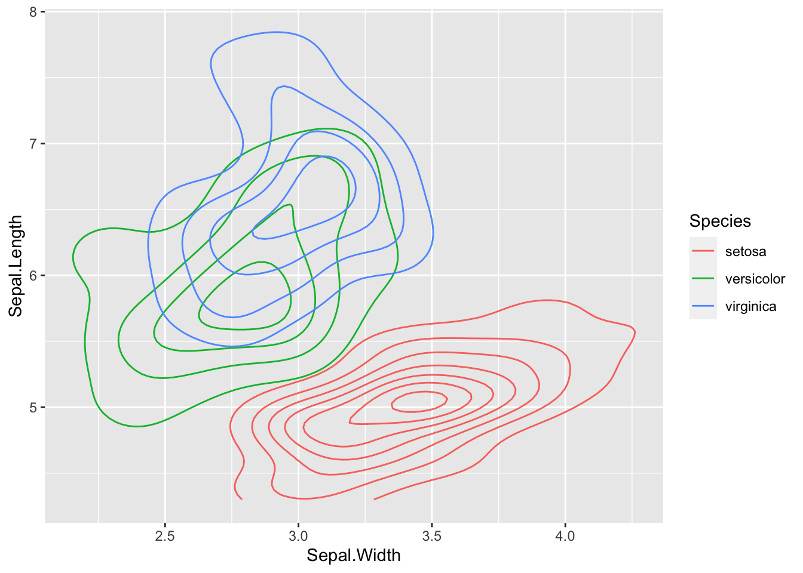
ggplot(data=iris,aes(x=Sepal.Width,y=Sepal.Length, color=Species)) +
geom_point()+
geom_density2d()
Save your plot
pdf("yourfile.pdf")
ggplot(data = iris, aes(Species, Sepal.Length))+
geom_boxplot(aes(color=Species, fill=Species), alpha=0.4)+
geom_jitter(aes(colour = Species), position = position_jitter(0.07), cex = 2.2)+
labs(x="Species", y="Sepal.Length (mm)")+
theme_minimal()
dev.off()quartz_off_screen
2 For this, we will use facet_wrap option on iris data
ggplot(data = iris, aes(Sepal.Length,Petal.Length))+
geom_point(aes(shape = Species))+
facet_wrap(~Species, scales = "free")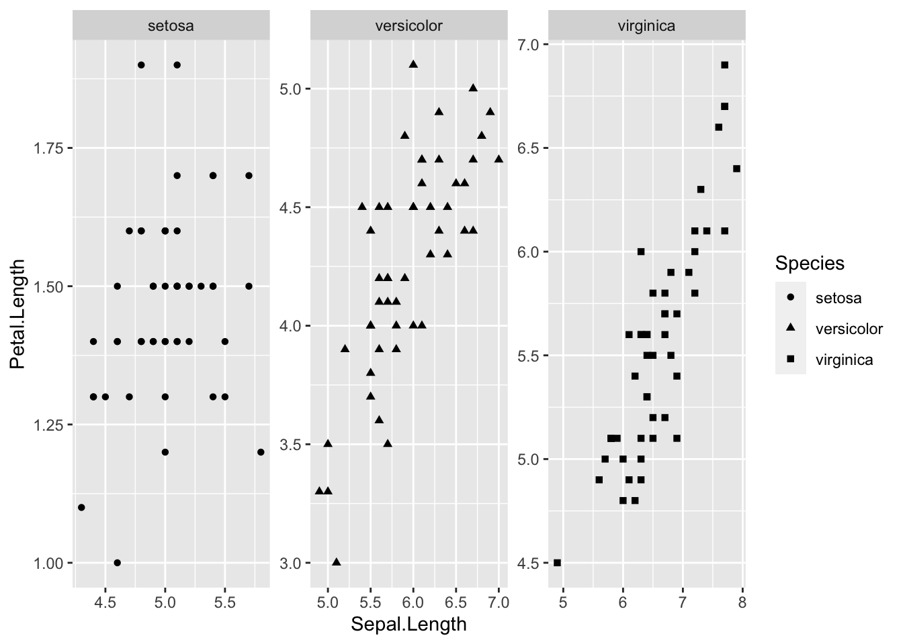
If not installed, you have to install it and load it
p4<-ggplot(data = iris, aes(Species, Sepal.Length))+
geom_boxplot(aes(color=Species, fill=Species), alpha=0.4)+
geom_jitter(aes(colour = Species), position = position_jitter(0.07), cex = 2.2)+
labs(x="Species", y="Sepal.Length (mm)")+
theme_minimal()
plotly::ggplotly(p4, height = 350, width=800)Exo 1
Esquisse is a web application to build easily a ggplot giving commande line to customize it. . Also, it is export graph as a picture or pdf